Vial
| Config name | vial_empty |
| Item id | 229 |
| Value | 2 gp |
| Weight | 15g |
| Members | No |
| Tradeable | Yes |
| Stackable | No |
| Defined in | scripts/skill_herblore/configs/brewing/vials.obj |
Vial
An empty glass vial.
Show 6 ground spawns on the world map → Open in knowledge graph →
How to make
| Skill | Level | XP | Ingredients | Tool | How | Where | Makes |
|---|---|---|---|---|---|---|---|
| Crafting | 33 | 35.0 | 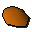 Molten glass | 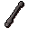 Glassblowing pipe | chat menu Beer Glass / Vial / Orb | 1 |
Dropped by
| NPC | Level | Quantity | Rarity | Via | Notes |
|---|---|---|---|---|---|
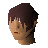 Man | 24 | 2 | 25/256 (9.77%) | ||
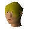 Man | 24 | 2 | 25/256 (9.77%) | ||
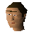 Man | 24 | 2 | 25/256 (9.77%) | ||
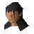 Woman | 24 | 2 | 25/256 (9.77%) | ||
| Woman | 24 | 2 | 25/256 (9.77%) | ||
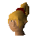 Woman | 24 | 2 | 25/256 (9.77%) | ||
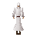 Druid | 33 | 1 | 5/64 (7.81%) |
Sold at
| Shop | Shopkeeper | Stock |
|---|---|---|
| Aemad's Adventuring Supplies. | 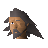 Aemad,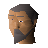 Kortan | 500 |
| Frincos Fabulous Herb Store. | 50 | |
| Jiminua's Jungle Store. | 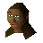 Jiminua | 10 |
| Obli's General Store. | 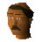 Obli | 10 |
| Jatix's Herblore Shop. | 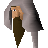 Jatix | 800 |
| Grud's Herblore Stall. | 50 |
Ground spawns
| Area | Coordinates | Level | Count | Map |
|---|---|---|---|---|
| Fishing Platform | 2808, 3343 | 0 | 1 | view |
| Fishing Platform | 2809, 3342 | 0 | 1 | view |
| Red Dragon Isle | 3188, 3839 | 0 | 1 | view |
| Red Dragon Isle | 3196, 3849 | 0 | 1 | view |
| Wizards' Guild | 2587, 3090 | 2 | 1 | view |
| Wizards' Guild | 2588, 3090 | 2 | 1 | view |
Quests
Hero's Quest Digsite Watch Tower Legends Quest
Referenced in scripts
scripts/_test/scripts/cheats/cheat_bank.rs2scripts/areas/area_canifis/scripts/canafis_citizen.rs2scripts/drop tables/scripts/druid.rs2scripts/general_use/scripts/water_sources.rs2scripts/levelup/scripts/levelup_unlocks_crafting.rs2scripts/player/scripts/consumption/effects/scripts/consume_effects.rs2scripts/quests/quest_hero/scripts/objs/oily_fishing_rod.rs2scripts/quests/quest_itexam/scripts/area_digsite.rs2scripts/quests/quest_itwatchtower/scripts/ogre_potion.rs2scripts/quests/quest_itwatchtower/scripts/ogre_shaman.rs2scripts/quests/quest_itwatchtower/scripts/watchtower_wizard.rs2scripts/quests/quest_legends/scripts/book_of_binding.rs2scripts/quests/quest_legends/scripts/legends_boulder.rs2scripts/quests/quest_legends/scripts/quest_legends.rs2scripts/skill_combat/scripts/weapon_poison.rs2scripts/skill_crafting/scripts/glass/glass.rs2scripts/skill_herblore/scripts/decanting/decant_potion.rs2